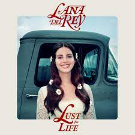

Luv Lana
Albuns
-
Born To Die
- Ano de lançamento: 2012
- Duração: 49m32s
- 12 faixas
-
Paradise

- Ano de lançamento: 2012
- Duração: 33m7s
- 8 faixas
-
Ultraviolence

- Ano de lançamento: 2014
- Duração: 51m29s
- 11 faixas
-
Honeymoon

- Ano de lançamento: 2015
- Duração: 1h5m
- 14 faixas
-
Lust For Life
- Ano de lançamento: 2017
- Duração: 1h12m
- 16 faixas
-
Norman Fucking Rockwell!!

- Ano de lançamento: 2019
- Duração: 1h7m
- 14 faixas
-
Chemtrails Over The Country Club

- Ano de lançamento: 2021
- Duração: 45m27s
- 11 faixas
-
Blue Banisters
- Ano de lançamento: 2021
- Duração: 1h1m
- 15 faixas
-
Did You Know That There's A Tunnel Under Ocean Blvd?
- Ano de lançamento: 2023
- Duração: 1h17m
- 16 faixas
-
Lasso
O album esta sendo preparado e deve ser lançado em setembro de 2024